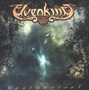

| Artist: | Elvenking |
| Title: | Heathenreel |
| Label: | AFM Records 0046782AFM |
| Length(s): | minutes |
| Year(s) of release: | 2001 |
| Month of review: | [10/2001] |
| 1) | To Oak Woods Bestowed | 0.46 |
| 2) | Pagan Purity | 4.35 |
| 3) | The Dweller Of Rhymes | 4.48 |
| 4) | The Regality Dance | 5.46 |
| 5) | White Willow | 5.59 |
| 6) | Skywards | 5.32 |
| 7) | Oakenshield | 6.37 |
| 8) | Hobs An' Feathers | 2.27 |
| 9) | Conjuring Of The 14th | 6.37 |
| 10) | A Dreadful Strain | 4.14 |
| 11) | Seasonspeech | 7.39 |
The Dweller Of Rhymes finds us in more complex waters: the music is at times really fast, while at other it becomes slow and waltzy or even lyrical and folky. The heavy rhythm guitars and the singalong harmonies still make for metal music, but this time it is not just the folk, but also a classical side to the band shining through. Again, the music is played energetically and always thoroughly melodic. Contrary to this, the guitar plays some dissonant parts as well, making the song more adventurous. For me, the music needs it, otherwise the music would simply boil down to a heavy metal variant on jolly/merry folk music.
The Regality Dance is a merry track alright, but one in which I find the vocals a bit on the edge at times. Because the music covers up less, it is more clearly audible and I do not like it much when he is getting to the higer regions. The continuation is better I think, with some really nice melodic work in the vocal lines. For the rest, this is up-tempo progmetal with the strong folk leanings we have been coming to expect. However, this track has quite a bit a few easily remembered parts. In the middle the music gets to be really fast and I don't think many people can keep up with a dance like this. In addition to the high pitched vocals of Damnagoras, Jarpen insert some dark growls.
White Willow opens in a driven fashion, but like all the previous tracks it has both fast and driven passages, singalong choruses and parts where the tempo is quite a bit lower. Skywards is a balladic track with soothing vocals; this is really very nice. Melodic folk with sad violin and acoustic guitar strumming. Towards the end, a powerful guitar sets in and female? vocals resounding in the back. For some reason, the band finds it necessary to include a very fast end to the track with growling vocals. Maybe not such a bright idea.
We jig on with Oakenshield. Keyboards line the music very well here, but soon we are back at a small pond with violins playing. The vocalist is supported by a soprano voice here, well unless the music starts to rock out again. Although Elvenking plays their own music one might still compare the band to Tempest on Magna Carta. However, I feel Elvenking's approach is more varied and still a bit less folky and also includes plenty of power metal influences. Something which Tempest lacks altogether.
The party continues with Hobs An' Feathers, adding little new to what we have heard already. Conjuring Of The 14th opens more powerfully and with a kind of sense of menace to the music. A dark story of evil is told in this song. The growl and ordinary vocals are both omnipresent in this track, which even includes some operatic choirs. After three minutes it is time to take some gas back musically, as the evil takes place. Sinister stuff, until we come back to the metal side of the song. Later on the operatic part returns, making for some necessary variation.
A Dreadful Strain has the plodding rhythm section and double bass drums of many of the tracks here and for the rest one might say that it includes the by now well known ingredients of the band.
Seasonspeech closes down the album and has one of the more memorable folky melodies. The vocals of this track are manifold: Damnamgoras, Jarpen and two female vocalists each play the role of a season, with their vocals as intertwined as the roots of a gnarled oak. There is plenty of merriment in this track which is one of the more varied on the album. I can not say all of the breaks feel natural, but it is good the band tries its hand at something else once in a while.